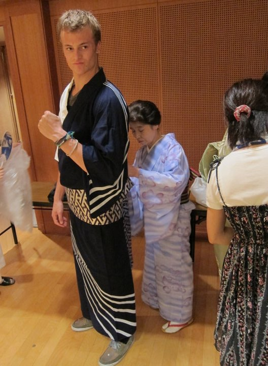

Born in Fort Collins, Colorado, I have moved every 3 years of my life, usually between countries or continents. This is quite tiring... I hope to setlle down and work for an awesome company.
I gradauted high school in Fruita, Colorado, and have been slowly finishing a double major, Business Administration, Information Systems Management, online while travelling and working. I have finished a certificate program in Project Management.
Recently moved back to Colorado from Tokyo, where I was an English teacher, math tutor, PE teacher, a guitarist in a Japanese rock band, and a bilingual accountant for international schools and non-profits. I'm staying at my relative's house in Castle Rock while I finish this school.
While in Tokyo, I was handed a website to manage as I was the only one with IT experience... this lead me to discover I am passionate about coding. I plan to turn this passion into a career, and to help non-profits in a more professional manner.
I speak Japanese
I have lived in 5 countries: Canada, US, Thailand, New Zealand, and Japan
I am usually exploring, rock climbing, playing guitar, or studying languages in my freetime